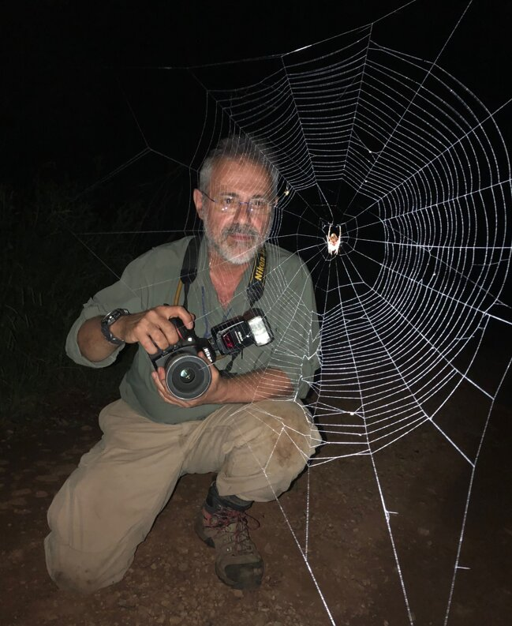
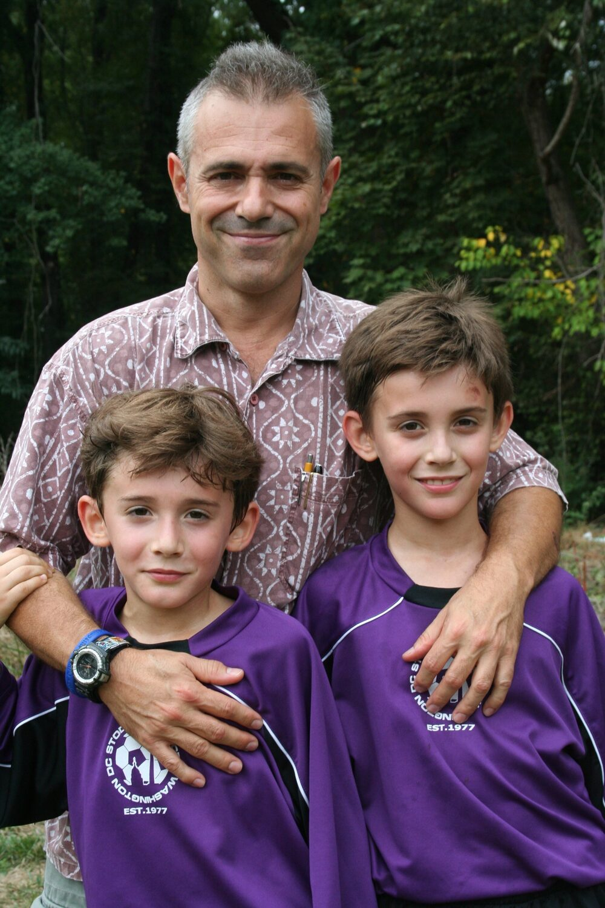

Hormiga
means ant.
I grew up in a house full of science — and more than a few spiders. My father holds a PhD in arachnology and has spent his career discovering species, naming genera, and mapping branches of the tree of life nobody knew existed. My mother is a scientist too; her published research examined the population structure and gene flow of predatory beetles. In our home, science wasn't a career — it was the family language.
Here is what I learned watching them and their colleagues: scientists are extraordinary at science. They will spend a decade mastering a single family of organisms, a single protein, a single equation. And then their life's work reaches forty readers behind a paywall.
Meanwhile, the speaking invitations, the documentaries, the profiles, the big grants — those go disproportionately to the scientists the world already knows. Not always the best ones. The most visible ones.
Hormiga Labs exists to close that gap — starting where every impression starts: your lab's website. We design it, build it, and keep it current, so the work speaks for itself when funders, journalists, and students come looking. And when you're ready for more — media, social, grant narratives — we're already in your corner.
Our name is the founder's name — Hormiga, Spanish for ant. It fits. An ant carries fifty times its own weight. A colony moves a forest one grain at a time, and no one notices until the landscape has changed. That's the model: relentless, collective, compounding work on behalf of your science.


The colony rules.
- CR.01 The science comes first We amplify rigor. We never inflate it.
- CR.02 Plain language wins If a funder can't repeat it, it doesn't exist.
- CR.03 Visibility compounds Every talk seeds the next three opportunities.
- CR.04 Carry more than your weight Small team. Disproportionate results.